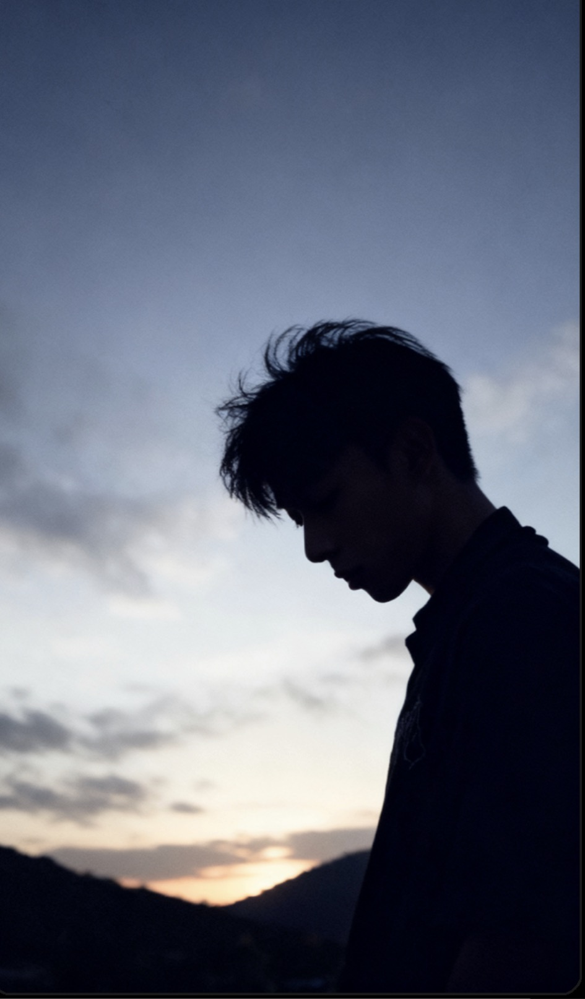
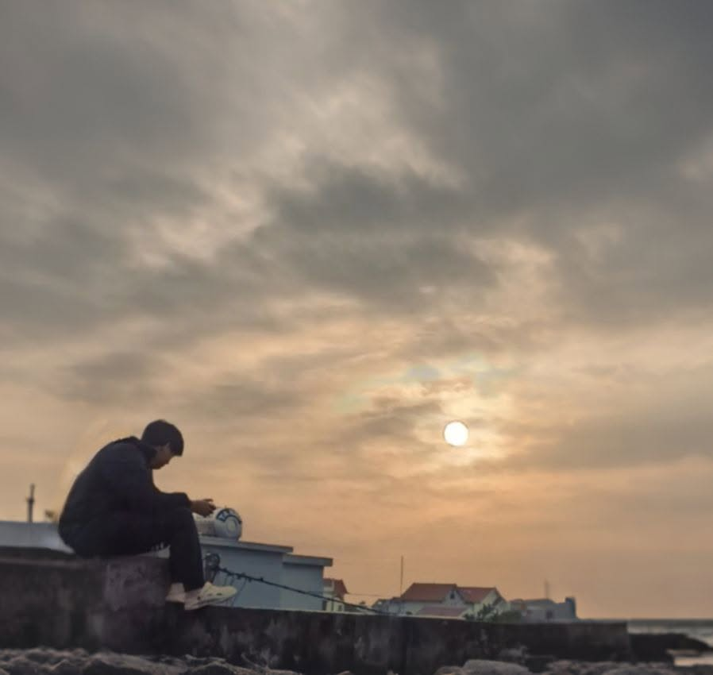

ABOUT ME
No Explanation
Có những cuộc đời không bắt đầu bằng tiếng khóc vui mừng, mà bằng sự im lặng nặng trĩu của những vết thương vô
hình.
Tôi sinh ra vào một ngày tháng 2 của năm 2004, mang theo những dấu vết mà chiến tranh để lại trên cơ thể mình
như một lời nhắc nhở không bao giờ tắt. Tôi không giống những đứa trẻ khác. Và ngay từ khi chưa kịp hiểu thế
giới, thế giới đã kịp định nghĩa tôi bằng ánh nhìn, bằng tiếng cười, bằng sự xa lạ.
Tuổi thơ của tôi không nằm ở sân chơi, mà nằm trong hành lang bệnh viện. Không phải ký ức về những trò đùa, mà
là những lần lên bàn mổ, những lần mở mắt giữa ánh đèn trắng lạnh lẽo, và những khoảng trống khi cha mẹ phải
rời đi để mưu sinh.
Tôi lớn lên giữa những mâu thuẫn: một bên là lời dạy về tử tế, một bên là thực tế của sự khinh miệt. Tôi từng
bị gọi tên bằng những từ không thuộc về con người, từng bị hiểu sai chỉ vì tồn tại. Có những lúc tôi phản
kháng, có những lúc tôi sai lầm, và cũng có những lúc tôi đánh mất chính mình giữa những điều đó.
Tôi từng nghĩ rằng im lặng sẽ giúp mình bình yên. Nhưng im lặng chỉ khiến mọi thứ vang lên rõ hơn trong lòng.
Có những giai đoạn, tôi nổi loạn để tồn tại, rồi lại học cách thu mình để không bị tổn thương thêm. Tôi từng
tin vào bạn bè, rồi cũng từng bị chính niềm tin đó phản bội. Tôi từng cố gắng sống đúng, nhưng lại bị nhìn như
sai.
Cho đến khi tôi nhận ra: không phải ai cũng hiểu câu chuyện phía sau một con người, nhưng ai cũng sẵn sàng đưa
ra kết luận.
Tôi đã đánh đổi rất nhiều thứ để trưởng thành—sự ngây thơ, sự tin tưởng vô điều kiện, và đôi khi là cả cảm
giác an toàn trong chính tâm trí mình. Có những lúc tôi đứng giữa ranh giới của buông bỏ và tiếp tục, nhưng
rồi vẫn chọn đi tiếp, không phải vì mọi thứ trở nên dễ dàng hơn, mà vì tôi hiểu rằng không ai có thể bước thay
mình.
Bây giờ nhìn lại, tôi không còn muốn được thương hại, cũng không cần phải chứng minh mình đúng với tất cả. Tôi
chỉ muốn sống như một người bình thường—không phải để được công nhận, mà để không còn phải chạy trốn khỏi
chính cuộc đời mình nữa.
Và nếu có một điều rút ra từ tất cả những vết xước đó, thì có lẽ là thế này:
Không phải ai sinh ra cũng được chọn điểm bắt đầu. Nhưng mỗi người đều phải tự chọn cách đi tiếp đoạn đường
còn lại.

Forgotten
Tôi không biết mình từng là gì trong trí nhớ bạn
Nhưng tôi biết rất rõ:Bạn từng là một phần không nhỏ trong tôi.
Chúng ta không thân.
Thậm chí có thể bạn chẳng nhớ nổi những thứ tôi đã từng nghĩ đến hàng trăm lần.
Nhưng cũng không sao.
Tôi từng chọn cách đứng sau, lùi lại vài bước.
Chỉ để nhìn bạn rõ hơn khi bạn tỏa sáng.
Tôi không cần chen vào khung hình.
Cũng không cần bạn quay lại tìm.
Vì có khi, chính bạn cũng không biết tôi đã từng đứng đó.
Có lúc tôi muốn quên bạn đi.
Xóa hết những dòng tin nhắn tôi từng gửi.
Cắt đứt mọi khả năng chạm lại trong tâm trí.
Tôi đã cố — và rồi thất bại.
Vì vẫn còn những đêm tôi nằm mơ thấy bạn,
Dù tôi chẳng nghĩ gì về bạn nữa.
Mơ nhiều đến mức… tôi phải thừa nhận:
Bạn vẫn còn trong tôi, theo cách tôi chẳng thể kiểm soát.
Nhưng tôi không yếu đuối, cũng chẳng mong chờ gì.
Tôi đã chấp nhận một điều từ lâu:
Ký ức của bạn không có tôi.
Tôi cũng đã xác nhận điều đó, một cách đủ khéo
Để không làm bạn khó xử, mà cũng đủ để tự hiểu mình đang ở đâu.
Giờ tôi chỉ muốn sống tiếp.
Không biết vì điều gì,nhưng chắc sẽ là không phải vì bạn nữa.
Vì tôi còn quá nhiều điều chưa sống trọn.
Bạn là một phần trong ký ức
Chứ không còn là một phần trong hướng đi của tôi nữa.
Nhưng nếu có một lần sau cuối tôi được nói
Tôi sẽ vẫn nhắn như từng nhắn:
‘Tôi từng thật lòng, và tôi chưa bao giờ hối hận vì điều đó.’

Didn’t End — Just Went Quiet
Tụi mình từng là bạn.
Đã từng chỉ cần nhìn vào ánh mắt là biết đối phương đang cố gồng lên hay sắp gục.
Thân đến mức chẳng cần hỏi: "Ổn không?" — vì biết rõ đáp án là không.
Vậy mà giờ...
Không drama, không cãi vã, không ai làm tổn thương ai.
Chỉ là… lặng đi.
Cuộc gọi không còn.
Tin nhắn cũng chẳng vội đáp.
Mấy câu hay nói với nhau khi gặp mặt giờ hóa hư vô.
Giờ mỗi đứa có thế giới riêng.
Chúng ta đều có bạn mới, lịch trình mới, những điều ưu tiên mới.
Tụi mình không còn nằm trong nhau nữa. Mà cũng chẳng có lý do để giữ nó lại.
Tôi không gọi đó là tiếc nuối.
Chỉ là, mỗi người trong chúng ta rồi sẽ đến một thời điểm phải tự bước trên đôi chân của mình
Những guồng quay bận rộn, những ngã rẽ không báo trước. Và rồi, giữa một khoảng lặng bất chợt, ta nhìn lại
tuổi thơ của mình. Nhìn lại những mảnh ký ức mà dù đã phủ bụi theo thời gian, và khó có thể xóa tên ai đó từng
đi ngang qua đời mình.
Trong ký ức của tôi, có bạn.
Chúng ta từng chia sẻ với nhau mọi điều, từng ngồi lại với nhau dù ngoài kia thế giới có ra sao.
Đã từng trao cho nhau những lời khuyên tưởng như nhỏ nhặt, nhưng lại giúp nhau vượt qua những giai đoạn bấp
bênh.
Đã từng chọn cách bỏ qua những khác biệt, những khuyết điểm, chỉ để...
Không đổ lỗi. Không trách nhau.
Chỉ tiếc...
Tôi tiếc một mối quan hệ tưởng như khó tan.
Tiếc một người từng hiểu mình hơn cả mình.
Tiếc rằng — có những thứ, khi nó lặng đi, thì mình hiểu… nó khó có thể quay lại nữa.
Cảm ơn đã xuất hiện trong kí ức của tôi.
Xin lỗi vì không thể tiếp tục đi cùng nhau nữa.